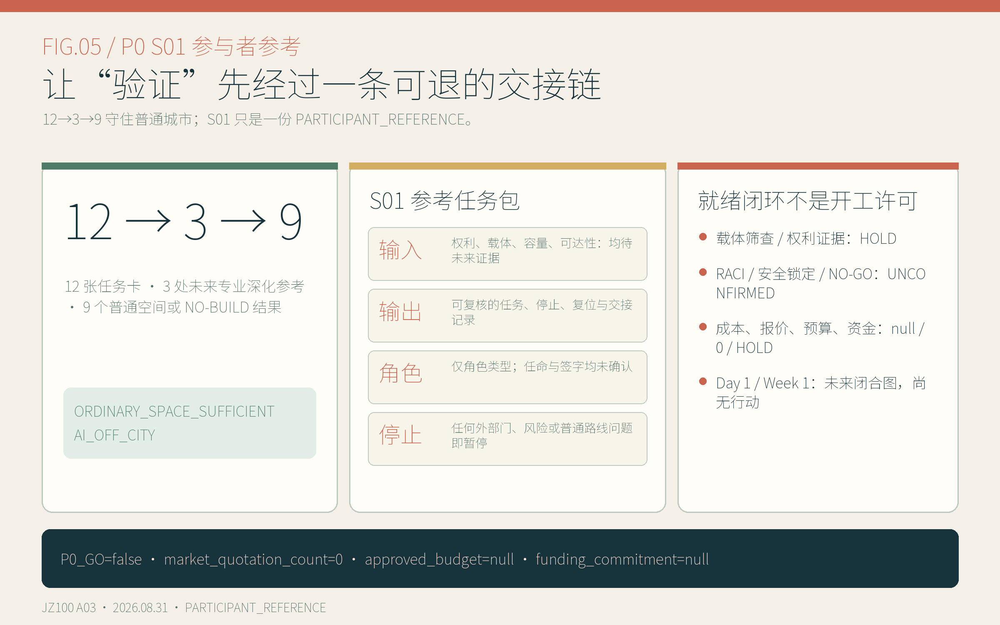

30 秒｜一座可相续的城市
看封面、三种连续与三层时间。理解普通生活为何先于技术，也为何不让短周期设备占用长久公共价值。

参与者概念提案｜不构成实景、红线、审批、工程、预算或运营承诺

JING-ZHANG IN PLACE / 京张续城
技术属于时代，城市属于世代。
城市不是技术的容器，而是代际生活的连续体。不是每一次技术进步，都值得城市付出永久的空间代价。京张续城先守住树荫、步行、学习、服务、维护与小微日常，再谨慎判断技术是否值得短暂停留。
READING ROUTES / 三条人本阅读路线
看封面、三种连续与三层时间。理解普通生活为何先于技术，也为何不让短周期设备占用长久公共价值。
看三处重点区与 P0。理解为什么只有 S01 被推至 P0，以及它如何停止、清场和回到日常。
看结构化资料、来源与假设。区分参与者的概念责任、未来专业深化与必须由现场观察证明的事项。
THREE TEMPORAL LAYERS / 三层时间
续时、续生、续忆让空间从技术炫示回到人的时间尺度。STATUS × ACTION 只作为审慎判断的底层骨架，不取代城市形象。
街道、树木、步行、公共服务和共有记忆不能为短周期设备让位。它们构成 AI 关闭后仍完整成立的公共底线。
房间、门槛、维护和运营可以修补、清理、重新交接；但每一步都不得越过权利、无障碍和公共连续性边界。
技术只在真的需要、有人负责、能被停止并完成复位时短暂停留；缺一项条件，即返回普通城市或 NO-BUILD。
KEY AREAS / 重点区域
三处不是一套可复制的 AI 房间：众智园只在已确认的未来载体内讨论验证，AI 原点保护公开学习与人工交接，大钟寺保留人的询问、纸质替代与争议入口。

坐标几何只提供可复算的概念一致性；官方边界、重点区和法定控制到位后，几何、指标、图件和动作接口须整体复算。
地面连续、无障碍、绿荫、维护、日常服务和既有生活优先。桥、隧、容量、产权、工程条件和现状建筑诊断均不在本包中虚构。
P0 / S01 ONLY
S01 是唯一进入 P0 的概念参考。它不是已选场地、已批准试点或施工图，而是一张帮助未来团队判断“是否根本不该做”的最小条件图。
只在真实、有界、有人负责的物理任务无法由仿真、审查或普通房间替代时，才讨论一个不占用公共路线的可撤测试边。概念会话：1 项活动任务/设备、5 个角色位、4 个预约观察位、总上限 9；Z0 不设等候队列。
外部门预开 → 普通基线核验 → 安装/检查 → 停止排演 → 一项受控任务 → 失效即关闭 → 人工接管 → 移除/恢复 → 独立普通基线复核。没有复位时长主张；任何问题先进入 QUARANTINED。
11 项外部条件均为 HOLD_EXTERNAL，P0_GO=false。

EVIDENCE & HANDOFF / 证据与交接
成本、预算、容量和现场表现均不以图像替代证据。当前 market_quotation_count=0，approved_budget=null，funding_commitment=null；替代顺序永远先问 NO-BUILD，再问更轻的可撤方案。